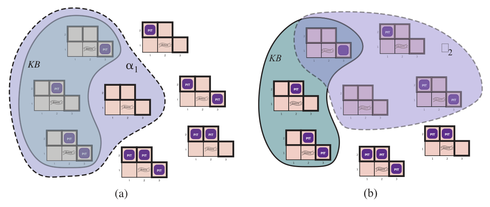
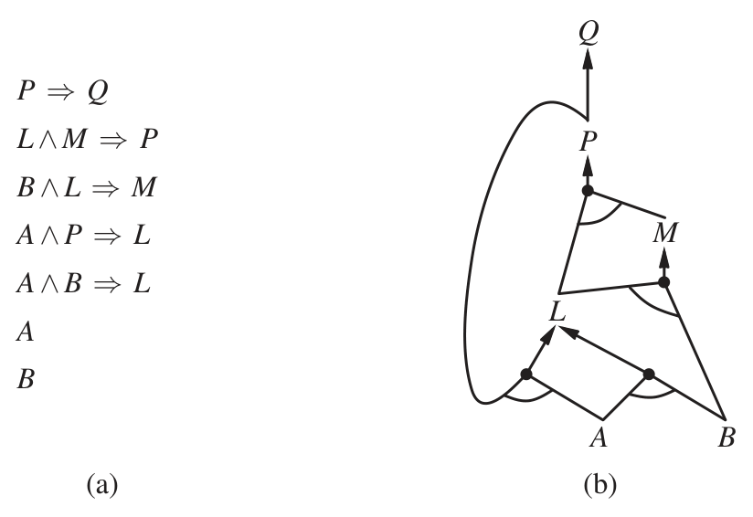
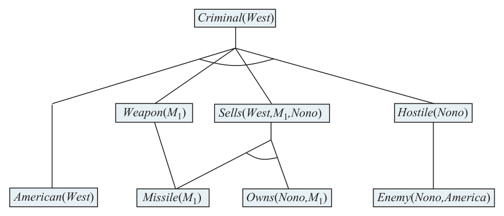

Overview
A knowledge-based agent stores what it knows as sentences in a formal language and uses logical inference to derive new sentences and decide what to do. This topic covers propositional logic and its inference methods, first-order logic, and logic programming in Prolog.
Knowledge representation
- Tell adds a sentence to the KB; ask queries what follows from it.
- Axiom: a sentence taken as given rather than derived.
- Inference: deriving new sentences from old ones.
- Declarative: tell the agent what it needs to know; procedural: program the behaviour directly (Russell and Norvig, 2021, pp. 209–210).
Families of representation
- Logical: propositional and first-order logic.
- Rule-based: production systems of condition–action (if–then) rules (Russell and Norvig, 2021, p. 292).
- Graphical: semantic networks (nodes linked by labelled relations); Bayesian and Markov networks (Russell and Norvig, 2021, p. 329).
- Structured: frames (slots and values); ontologies (formal vocabularies of a domain) (Russell and Norvig, 2021, p. 272).
- Running example, the wumpus world: a 4 × 4 cave where a breeze is felt next to a pit; the agent must infer which squares are safe (Russell and Norvig, 2021, pp. 210–211).
Syntax, semantics and entailment
- Syntax: which sentences are well formed.
- Semantics: the truth of each sentence in each possible world.
- Model: a mathematical abstraction of a possible world that fixes the truth of every relevant sentence. If α is true in m, then m satisfies α; M(α) is the set of all models of α.

- α1 holds in all three KB models, so KB ⊨ α1; α2 fails in two, so it is not entailed.
- Model checking: deciding entailment by listing models.
- Sound: derives only entailed sentences. Complete: can derive every entailed sentence (Russell and Norvig, 2021, p. 216).
Propositional logic
- Atomic sentence: a single proposition symbol (such as P1,2, a pit in [1,2]) or True or False.
- Connectives: ¬ (negation), ∧ (conjunction), ∨ (disjunction), ⇒ (implication: premise and conclusion), ⇔ (biconditional); precedence ¬, ∧, ∨, ⇒, ⇔.
- Literal: an atomic sentence or its negation.
- A model assigns true or false to each symbol; n symbols give 2n models (Russell and Norvig, 2021, pp. 217–218).
| P | Q | ¬P | P ∧ Q | P ∨ Q | P ⇒ Q | P ⇔ Q |
|---|---|---|---|---|---|---|
| false | false | true | false | false | true | true |
| false | true | true | false | true | true | false |
| true | false | false | false | true | false | false |
| true | true | false | true | true | true | true |
- P ⇒ Q is true whenever P is false and needs no causal link; ∨ is inclusive.
- Wumpus rule: B1,1 ⇔ (P1,2 ∨ P2,1) (Russell and Norvig, 2021, pp. 219–220).
- Strengths: declarative, compositional, context-independent, and handles partial information; limitation: very limited expressive power, so “pits cause breezes in adjacent squares” needs one sentence per square (Russell and Norvig, 2021, pp. 251–252).
Equivalence, validity and satisfiability
- Logically equivalent (α ≡ β): true in the same models. Key equivalences: α ⇒ β ≡ ¬α ∨ β; α ⇔ β ≡ (α ⇒ β) ∧ (β ⇒ α); contraposition α ⇒ β ≡ ¬β ⇒ ¬α; De Morgan ¬(α ∧ β) ≡ ¬α ∨ ¬β and ¬(α ∨ β) ≡ ¬α ∧ ¬β; distributivity of ∨ over ∧.
- Examples: A ∨ ¬A is valid; A ∨ B is satisfiable; A ∧ ¬A is unsatisfiable.
- Deduction theorem: α ⊨ β if and only if α ⇒ β is valid.
- Proof by refutation (reductio ad absurdum): α ⊨ β if and only if α ∧ ¬β is unsatisfiable.
- Deciding satisfiability (SAT) was the first problem proved NP-complete (Cook, 1971).
Proof methods and resolution
Model checking
- Truth-table enumeration: check α in every model where KB is true.
- Sound and complete; time O(2n), space O(n) because models are generated depth first.
- Propositional entailment is co-NP-complete, so every known algorithm is exponential in the worst case (Russell and Norvig, 2021, p. 222).
Inference rules
- Modus Ponens: from α ⇒ β and α, infer β.
- And-Elimination: from α ∧ β, infer α.
- Every logical equivalence can also be used as an inference rule.
- A proof is a chain of sound steps to the goal; finding one is a search problem (Russell and Norvig, 2021, pp. 223–224).
Resolution
- Clause: a disjunction of literals. Example: from A ∨ B and ¬A ∨ C, infer B ∨ C.
- Resolve on only one complementary pair at a time; factoring removes repeated literals.
- Conjunctive normal form (CNF): a conjunction of clauses; every sentence has an equivalent CNF (Russell and Norvig, 2021, p. 226).
Converting to CNF:
- Eliminate ⇔: α ⇔ β becomes (α ⇒ β) ∧ (β ⇒ α).
- Eliminate ⇒: α ⇒ β becomes ¬α ∨ β.
- Move ¬ inwards using double negation and De Morgan.
- Distribute ∨ over ∧ (Russell and Norvig, 2021, pp. 226–227).
Resolution algorithm (to show KB ⊨ α):
- Convert KB ∧ ¬α to CNF.
- Resolve pairs of clauses with complementary literals and add the new clauses.
- If the empty clause (equivalent to False) appears, KB ⊨ α; if no new clauses appear, it does not.
- Example, KB = {A ∨ B, ¬A ∨ C, ¬B ∨ C}, query C: add ¬C; resolve to B ∨ C, then ¬B, then C, then the empty clause with ¬C; so KB ⊨ C.
- Resolution is complete for propositional logic (ground resolution theorem) and always terminates (Russell and Norvig, 2021, p. 228).
Horn clauses and chaining
- A definite clause is an implication, body ⇒ head: ¬A ∨ ¬B ∨ C is A ∧ B ⇒ C.
- Fact: a single positive literal. Goal clause: no positive literal.
- For definite clauses, entailment is decided in time linear in the size of the KB.

Forward chaining
- Start from known facts; each clause keeps a count of premises not yet known.
- Process symbols from an agenda; when a clause's count reaches zero, add its conclusion to the agenda.
- Answer yes when the query is reached, no when the agenda empties.
- Figure 7.16: from A and B, infer L, M, P, then Q.
- Sound (Modus Ponens) and complete for definite clauses (Russell and Norvig, 2021, pp. 230–231).
Backward chaining
- Start from the query; find rules concluding it and prove all their premises recursively, down to known facts.
| Forward chaining | Backward chaining | |
|---|---|---|
| Style | Data-driven | Goal-directed |
| Cost | Linear, but may derive irrelevant facts | Often much less than linear (Russell and Norvig, 2021, pp. 231–232) |
- Both are complete only for definite clauses; full propositional logic needs resolution or model checking.
First-order logic
- Propositional logic commits to facts; first-order logic to objects, relations and functions (relations with exactly one value for each input) (Russell and Norvig, 2021, p. 254).
- Term: refers to an object; a constant (KingJohn), variable or function applied to terms, such as LeftLeg(John). A ground term has no variables.
- Atomic sentence: a predicate applied to terms, such as Brother(KingJohn, Richard), or two terms joined by =.
- A model has a nonempty domain of objects; an interpretation maps constants to objects, predicates to relations and functions to functions.
- Models are unbounded in number, so entailment cannot be checked by listing them (Russell and Norvig, 2021, pp. 256–261).
Quantifiers and equality
- ∀x P is true if P holds for every object: ∀x At(x, Berkeley) ⇒ Smart(x).
- ∃x P is true if P holds for at least one object: ∃x At(x, Stanford) ∧ Smart(x).
- Use ⇒ with ∀ and ∧ with ∃; the other pairings say almost nothing or far too much (Russell and Norvig, 2021, pp. 261–263).
- Order matters for mixed quantifiers: ∀x ∃y Loves(x, y) is “everybody loves somebody”; ∃y ∀x Loves(x, y) is “someone is loved by everyone”.
- De Morgan for quantifiers: ∀x ¬P ≡ ¬∃x P; ¬∀x P ≡ ∃x ¬P.
- Equality: term1 = term2 is true if both refer to the same object; ¬(x = y) states distinctness (Russell and Norvig, 2021, p. 264).
Inference in first-order logic
- Universal Instantiation: replace a universally quantified variable by any ground term.
- Existential Instantiation: replace an existentially quantified variable by a new Skolem constant (Russell and Norvig, 2021, pp. 280–281).
- First-order entailment is semidecidable: entailed sentences can always be proved, but non-entailment cannot always be detected (Russell and Norvig, 2021, p. 282).
- Knows(John, x) and Knows(y, Mother(y)) unify with {y/John, x/Mother(John)}.
- Knows(John, x) and Knows(x, Elizabeth) fail; renaming variables apart first (standardizing apart) removes the clash.
- Every unifiable pair has a single most general unifier; the occur check stops x unifying with a term containing x.
- From King(John), Greedy(y) and King(x) ∧ Greedy(x) ⇒ Evil(x), with θ = {x/John, y/John}, infer Evil(John).
Forward and backward chaining
- Crime example: an American selling weapons to a hostile nation is a criminal; West, an American, sold missiles to Nono, an enemy of America.
- Forward chaining works in rounds, firing every rule whose premises unify with known facts: round one adds Sells(West, M1, Nono), Weapon(M1), Hostile(Nono); round two adds Criminal(West).
- Sound and complete for definite clauses; always terminates for Datalog (no function symbols) (Russell and Norvig, 2021, pp. 287–288).
- Backward chaining unifies the goal with rule conclusions and proves premises left to right, passing on substitutions; a depth-first AND–OR search, linear in space but incomplete (Russell and Norvig, 2021, pp. 293–294).

Logic programming and Prolog
- An incorrect axiom is a false statement about the world and can be spotted independently of the rest of the KB, which eases debugging (Russell and Norvig, 2021, p. 273).
Prolog
- The most widely used logic programming language: depth-first backward chaining over definite clauses (Russell and Norvig, 2021, pp. 294–295).
- A rule is written conclusion first, read “C if A and B”; variables start with an upper-case letter, constants with lower case.
- Clauses are tried in written order, premises left to right.
- Closed-world assumption: only sentences entailed by the KB are true (Russell and Norvig, 2021, p. 297).
- Negation as failure: “not P” succeeds when the attempt to prove P fails (Russell and Norvig, 2021, p. 310).
- Depth-first search makes Prolog incomplete: a recursive rule written first can loop for ever (Russell and Norvig, 2021, pp. 295–296).
References
- Cook, S.A. (1971) 'The complexity of theorem-proving procedures', in Proceedings of the Third Annual ACM Symposium on Theory of Computing (STOC '71). New York: ACM, pp. 151–158. doi:10.1145/800157.805047.
- Horn, A. (1951) 'On sentences which are true of direct unions of algebras', Journal of Symbolic Logic, 16(1), pp. 14–21. doi:10.2307/2268661.
- Kowalski, R. (1979) 'Algorithm = logic + control', Communications of the ACM, 22(7), pp. 424–436. doi:10.1145/359131.359136.
- Robinson, J.A. (1965) 'A machine-oriented logic based on the resolution principle', Journal of the ACM, 12(1), pp. 23–41. doi:10.1145/321250.321253.
- Russell, S. and Norvig, P. (2021) Artificial intelligence: a modern approach. 4th edn. Hoboken, NJ: Pearson.
Quiz
Only your first attempt at each question counts towards your score. Interactive questions may be retried. Progress is saved in this browser.
Which statement defines entailment, KB ⊨ α?
Which sentence is valid?
Proof by refutation rests on which result?
What are the time and space requirements of truth-table enumeration when KB and α contain n proposition symbols?
Which clause is a definite clause?
What is the result of resolving P ∨ ¬Q ∨ R with ¬P ∨ Q on P?
Which is the conjunctive normal form (CNF) of (A ∨ B) ⇒ C?
Which statement about forward and backward chaining is correct?
Which first-order sentence correctly represents “All kings are persons”?
What does ∀x ∃y Loves(x, y) say?
What is the most general unifier of Knows(John, x) and Knows(y, Mother(y))?
A Prolog program contains the rule “X is alive if X cannot be proved dead” and the single fact that Fred is dead. What is the answer to the query “is Mary alive?”
Use resolution to show that the knowledge base {P ⇒ Q, Q ⇒ R, P} entails R. List the clauses and each resolution step.
Convert the KB and the negated query to CNF: (1) ¬P ∨ Q; (2) ¬Q ∨ R; (3) P; (4) ¬R.
(5) Resolve 2 and 4 on R: ¬Q. (6) Resolve 1 and 5 on Q: ¬P. (7) Resolve 3 and 6 on P: the empty clause.
The empty clause shows that KB ∧ ¬R is unsatisfiable, so KB ⊨ R.
The knowledge base contains the facts A and B and the definite clauses A ∧ B ⇒ C, C ⇒ D, D ∧ A ⇒ E and F ⇒ G. Trace forward chaining for the query E, and state why one rule never fires.
The agenda starts with A and B. Once both are processed, the count of A ∧ B ⇒ C reaches zero, so C is added; C completes C ⇒ D, adding D; D completes D ∧ A ⇒ E, adding E, the query, so the answer is yes.
F ⇒ G never fires because F is never known, so its count never reaches zero.
State three strengths of propositional logic as a representation language and its main limitation, with an example.
Strengths: it is declarative; it is compositional (the meaning of a sentence is built from the meanings of its parts); it is context-independent; and it can express partial information through disjunction and negation.
Limitation: very limited expressive power. A general rule such as “pits cause breezes in adjacent squares” must be written as one sentence per square, for example B1,1 ⇔ (P1,2 ∨ P2,1); first-order logic, with objects and relations, can state it once.